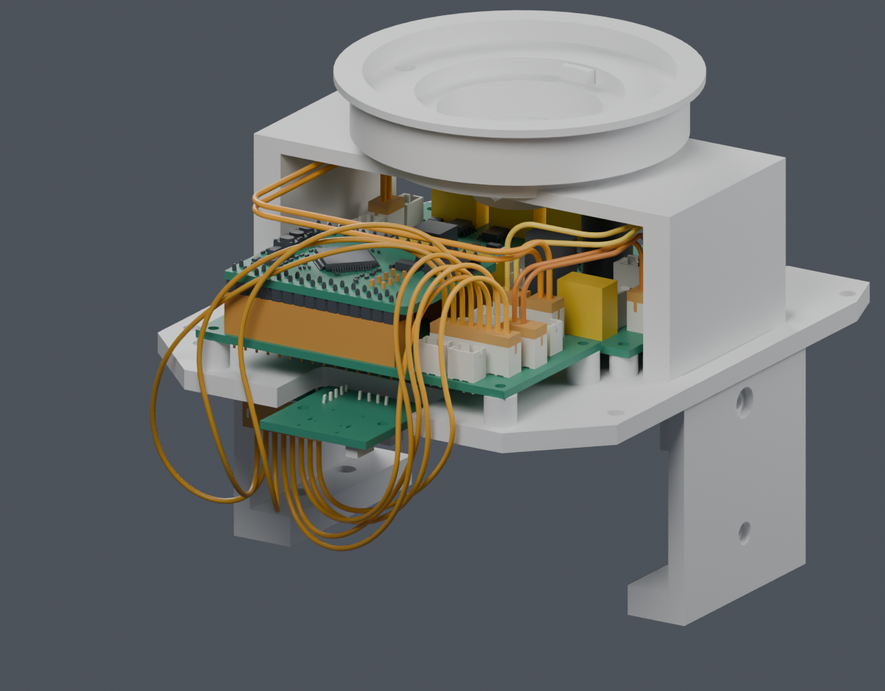
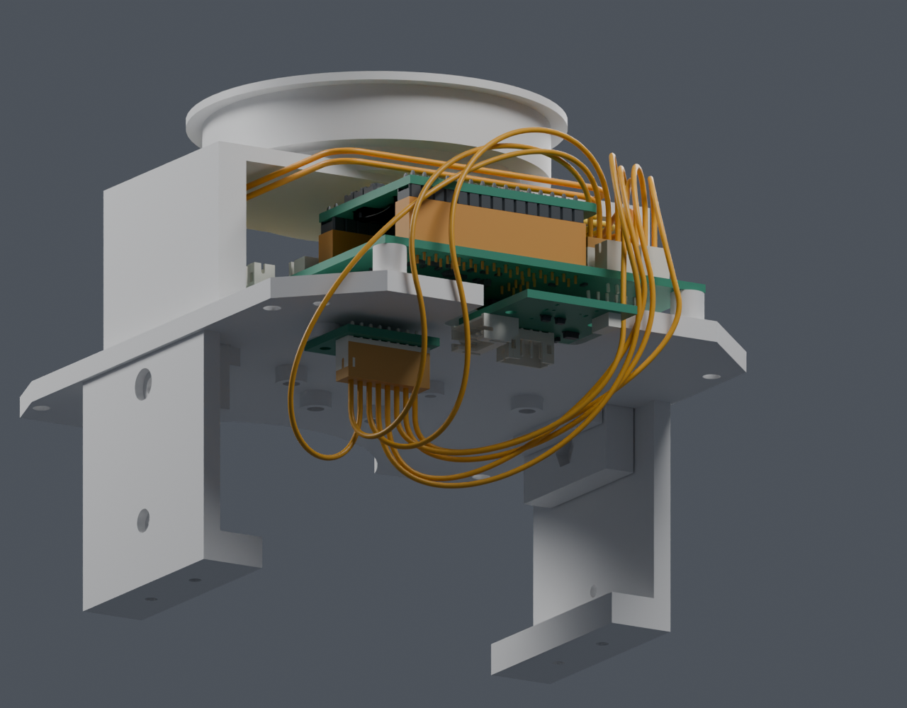

返回走线研究固定线束：八根IMU线与原六根线的联合候选
保持主模型 M1.47、原针脚对应、所有板卡和打印件。未新增开孔，没有把研究线束写入正式装配或视频。
H01–H04 共14根固定线通过本页声明的名义几何检查。整机线束仍未完成：其余分支、绑束、应力释放、真实出线、松量与带线插拔还需继续落实。这不是裁线单或生产放行。
| 检查 | 结果 | 范围 |
|---|
| 针序、端点、曲线与弯曲半径 | PASS | 2203条筛后曲线复核；选中8条保留原编号与5mm端后直段 |
| 14根线实体及静态间隙 | PASS | 14个连续实体，91组线间检查；保守线间下界0.302mm、近邻硬件下界0.488mm |
| 头部运动 | PASS | 130个组合姿态，未检出相交 |
| 身体与承重桥装配 | PASS | 407个位置及两处横向螺钉/工具路径，未检出相交 |
以上是离散位置和明确公差分配下的检查；不代表连续运动、制造误差、线束柔性或实物装配已经验证。


橙色为尚未选定的线材及名义插头。外壳、电池等仅在预览中隐藏，实体检查仍包含它们。
八根IMU线
| 线号 | 通过方向 | 最小名义弯曲半径 | 几何中心线长 |
|---|
| H04_1 | 左侧 | 5.13 mm | 128.2 mm |
| H04_2 | 左侧 | 7.60 mm | 146.4 mm |
| H04_3 | 左侧 | 7.51 mm | 134.5 mm |
| H04_4 | 右侧 | 5.69 mm | 137.0 mm |
| H04_5 | 右侧 | 6.19 mm | 127.4 mm |
| H04_6 | 右侧 | 5.27 mm | 115.0 mm |
| H04_7 | 右侧 | 5.63 mm | 123.4 mm |
| H04_8 | 右侧 | 5.23 mm | 117.3 mm |
几何长度未加入压接、插入、松量或制作余量，不能用于裁线。Alpha6711/6712仍是有厂家数据的未选定候选；实际端子横向出线及5mm直段分配为ASSUMED。
与前次检查的关系
前一组14线通过静态检查，但在身体装配中实际碰到了壳体或后板，失败记录保留。本次组合采用3根IMU线的两端转弯细化候选，并重新选择其余曲线，解决了本组14线在规定装配路径中的相交。此前空腔误判的修正与回归记录也保留，不能把有限候选搜索的失败当作结构无解。
独立候选 Blender · 实体与头部运动 · 身体装配与工具 · 针脚及曲线数据复核 · 八线联合选择 · 此前筛选修正记录
PROTOTYPE / UNVALIDATED。主模型与 M1.47-A1 装配视频未改变。